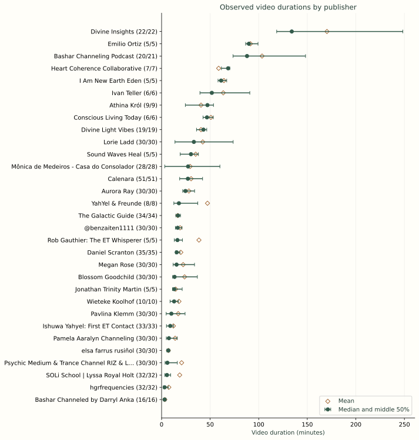
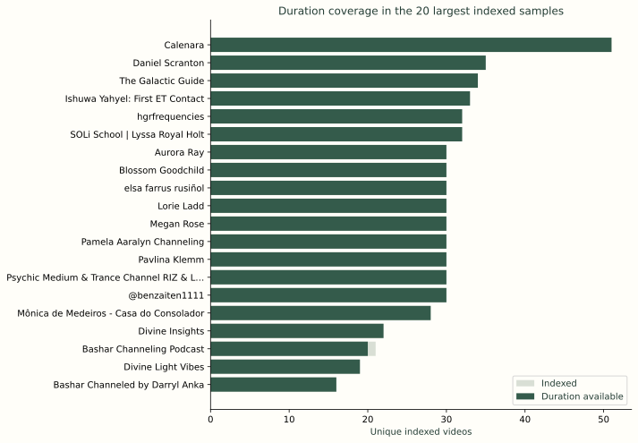
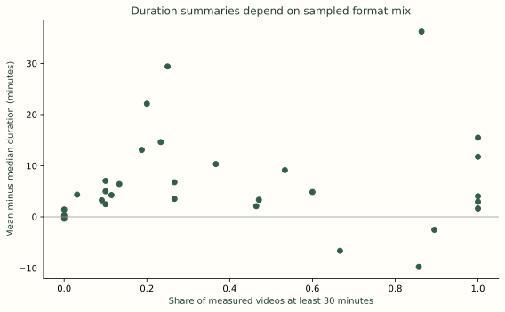
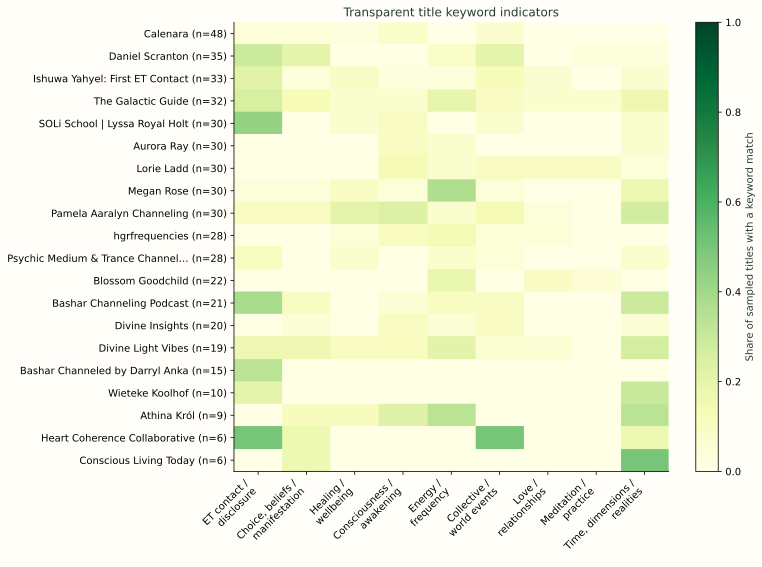
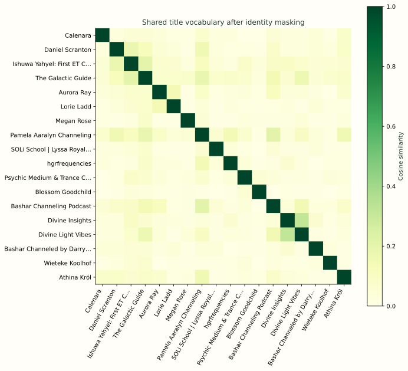
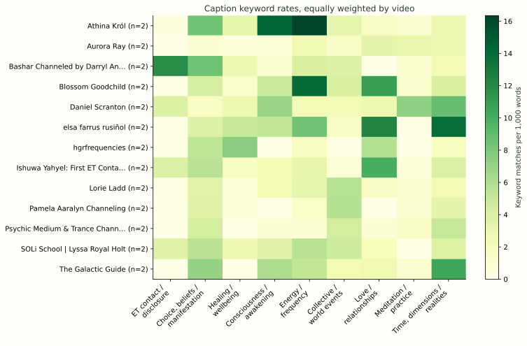
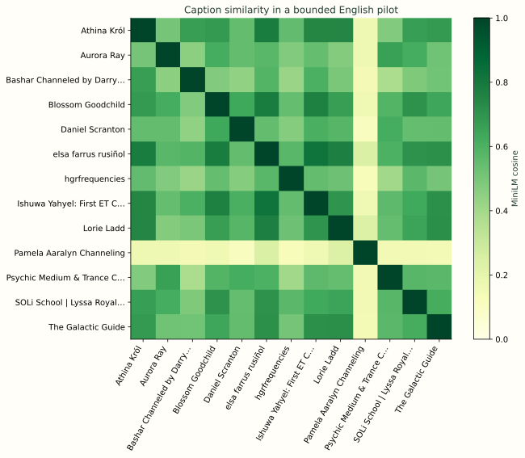
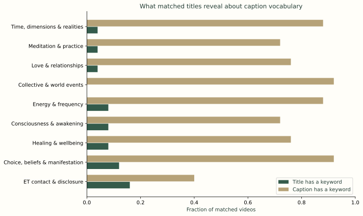
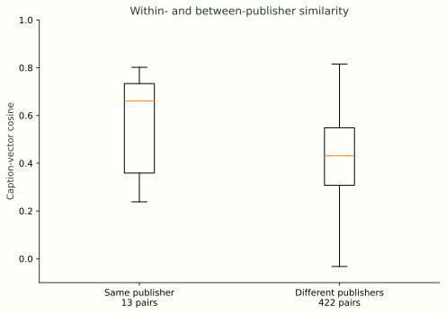

CHANNELING ATLAS · RESEARCH SNAPSHOT · 23 OCTOBER 2026
Upload formats and text layers shape the comparisons
A source-linked exploratory analysis of the supplied Claude research and the existing YouTube index.
What this sample shows
The merged index contains 925 unique YouTube video IDs. Duration metadata is available for 881 and an exact publication day for 880. The table groups uploads by publishing account; these groups must not be counted as distinct human mediums. The supplied draft adds substantial coverage, but its mostly capped listings do not measure complete channel histories.
The clearest descriptive contrast is upload length: the sampled official Bashar account has a mean of 3.4 minutes, while the sampled Bashar Channeling Podcast account has a mean of 103.5 minutes. The examples suggest a role for excerpt and compilation formats, but no formal format annotation has been performed. A single overall average would conceal those differences. Each dashboard row therefore reports measured/indexed counts, mean, median and quartiles.
Available captions make a substantive pilot possible: 34 of 36 selected uploads yielded text, with 30 English documents included in the main analysis. Learned embeddings were actually computed with a pinned 384-dimensional MiniLM model. They measure text resemblance; they do not validate the claimed source of a communication.
How the uploaded draft changed the evidence
The Claude ZIP contains 466 video rows, including 457 unique valid video IDs and nine unlinked leads. Fourteen IDs overlap the earlier 482-video index, producing the 925-video union. Its 450 supplied duration values include one originally marked as an estimate; the initial primary duration analysis used 449. Fresh metadata now takes precedence where available, with inherited values and discrepancies preserved.
The directory’s 92 rows are not 92 verified YouTube accounts: only 53 contain account routes. Some missing rows reflect collection-credit exhaustion. Relative date labels such as “one month ago” remain labels rather than invented publication dates. The ZIP contained summaries and research notes, not full transcripts. The supplied entity-frequency and audience charts were replaced with plots whose units and sample coverage are explicit.
Average length belongs to an account and a sample
These examples are selected for continuity with the research brief, not as a ranking. The complete downloadable table includes every group and null values. A mean well above the median suggests that longer uploads influence the average; it is a reason to inspect formats, not a measure of quality or popularity.

Observed duration by channel. Each row uses available duration metadata for unique indexed video IDs. Labels show measured/indexed counts. Dots are medians; whiskers are the 25th–75th percentiles, not confidence intervals; diamonds are means. Only channels with at least five durations are plotted. These are convenience samples, often capped by source listings, not channel-wide averages. Metadata checked 23 October 2026; current and inherited source layers are marked in exports.
Duration coverage. Counts refer to the merged research index. The pale portion includes videos without usable duration metadata. Channel order reflects sample size, not popularity, activity or the size of the entire account. Metadata checked 23 October 2026; current and inherited source layers are marked in exports.
Format mix and mean–median difference. Each point is an account with at least five known durations. The x-axis is the sample share lasting at least 30 minutes, an operational format indicator; the y-axis compares two summaries of the same sample. This descriptive relationship is partly mathematical and does not show a behavioral cause. Metadata checked 23 October 2026; current and inherited source layers are marked in exports.Titles describe how uploads are presented
Nine predefined, overlapping keyword families provide an inspectable first pass through English-likely titles. A cell measures the fraction of eligible titles with at least one match. The denominator excludes short or non-English-likely titles under a documented language heuristic. Current watch-page titles replace supplied translations for analysis, while variants remain available for audit.
Frequent words can reflect packaging, branding, repost titles or the eliciting question. They are not equivalent to the frequency of an idea in a session. Topic names are descriptive indicators and have not been validated by blinded human coders.

Title topic indicators. A cell is the fraction of eligible sampled titles matching at least one predefined English keyword in that topic. Topics overlap and are not validated semantic classes. This measures headline vocabulary, not the contents of a session; multilingual and short titles can be missed. The 20 largest eligible title samples are shown. Metadata checked 23 October 2026; current and inherited source layers are marked in exports.
Shared title vocabulary. Cosines compare equal-video-weight TF-IDF centroids after masking common channeling identity terms. Values are descriptive similarity scores, not probabilities or evidence of shared origins. Each account has at least five eligible titles. The 18 largest samples are plotted; exact matrices are exported. Diagonal self-comparisons equal1 by construction. Metadata checked 23 October 2026; current and inherited source layers are marked in exports.Captions permit a closer comparison, with important boundaries
The caption pilot deliberately covers multiple accounts and is not random. Thirty documents from 17 publishing groups enter the main English analysis; 13 groups have at least two documents for account-level similarity. Most retrieved tracks are automatic. Speech recognition errors, hosts, questions, advertisements and promotional material remain in the text; no speaker diarization or audio verification was performed.
Long captions are encoded in explicit 240-wordpiece chunks, pooled to videos and then equally to accounts. This avoids silently encoding only the beginning of a session or letting longer recordings contribute more chunks to an account representation. The short final chunk nevertheless receives equal weight, which is a remaining modeling choice to test. Keyword rates are calculated per 1,000 alphabetic word tokens for each video and then averaged equally within account.

Caption keyword rates. English caption pilot only, at least two videos per publisher. Each video contributes equally after dividing its keyword matches by its own word count. These transparent overlapping indicators are unvalidated; automatic captions are uncorrected and voices are not separated. Longer sessions do not receive greater channel weight. Metadata checked 23 October 2026; current and inherited source layers are marked in exports.
Caption semantic similarity. Pinned all-MiniLM-L6-v2, 384 dimensions: non-overlapping 240-token chunks are averaged within each video, then video vectors are averaged equally within each publisher. Common identity words are masked. At least two captioned videos per publisher. Similarity can reflect genre, narration, shared teachings or ASR, and does not test claims of extraterrestrial origin. Diagonal self-comparisons equal1 by construction. Metadata checked 23 October 2026; current and inherited source layers are marked in exports.
Matched title and caption indicators. Same English pilot videos in both bars. A match is at least one dictionary keyword; this is vocabulary presence, not semantic agreement. Captions are much longer than titles and therefore have more opportunities to match. Higher caption fractions show that title-only keyword matching omits vocabulary present in captions; they do not quantify topic emphasis. Metadata checked 23 October 2026; current and inherited source layers are marked in exports.
Caption similarity by publisher pairing. Each point-pair compares two caption-document vectors. Boxes mark the middle 50%, central lines medians, whiskers the usual 1.5×IQR range. Pairs share documents and are dependent; no significance test or population conclusion is warranted. Similarities may arise from genre, prompt structure, host language and boilerplate. Metadata checked 23 October 2026; current and inherited source layers are marked in exports.A separate Daniel Scranton check links one official written message to its exact YouTube upload. Ordered matches cover 96.7% of the written message but only 42.5% of caption word tokens under the supplementary concordance tokenizer. That Unicode word-token alignment differs from the main analysis’s alphabetic-token keyword-rate calculation. In a caption-observed closing-window check, roughly half the upload’s alphabetic words occur after the closing. This single example shows why an upload-level vector cannot automatically be interpreted as the vocabulary of a claimed entity. It does not establish caption accuracy across the corpus.
What survives a change in analysis choices
The pipeline compares raw and identity-masked titles, excludes repeated masked-title strings, repeatedly draws balanced five-title samples, and trims the outer 10% of caption words. These are descriptive sensitivity analyses on the observed sample, not population confidence intervals. Exact repeated titles are only one proxy for reposts; different edits of the same original session can remain.
In the independently checked 13-account caption comparison, full-versus-trimmed pair rankings correlate at 0.9695, while nearest neighbors change for four accounts. Broad pair ordering and individual neighbor labels therefore tell different stability stories. Trimming is not a substitute for separating speakers or promotional segments.
The paired title/caption diagnostic uses the same 25 video IDs on both sides, yielding 11 comparable account centroids and 55 account pairs. Their ranking correlation is 0.206, so headline-based similarity is a weak substitute for caption-based similarity in this selected pilot. Differences can then be described as text-layer differences within that pilot, rather than confused with different video samples. Even in a matched set, a long caption has more chances to contain a keyword than a title.
How this relates to published work
The closest 2026 studies by Wahbeh and Glick use prospectively elicited interviews with three channelers and standardized topics. Their embedding and qualitative analyses motivate matched prompts and contextual reading. Their reported similarities cannot be compared directly to unprompted YouTube uploads with different speakers, lengths and editing. The public supplement was inspected; missing participant inputs and analysis components prevent a replication claim.
A 2023 exploratory study of 15 channelers answering scientific questions reported very little cross-channeler correspondence despite some shared qualitative themes. Different prompts and measures prevent a simple contradiction or pooled estimate. Together, these studies illustrate why thematic resemblance, answer agreement and claimed origin must remain separate questions.
Sentence-BERT supplies the general embedding method. Topic-model evaluation and small-corpus studies motivate explicit units, human validation and stability checks. Recent embedding benchmarks and candidate models are included in the literature register; MiniLM is an executed baseline, not a state-of-the-art claim. BERTopic and larger multilingual encoders were reviewed as possible follow-ups but were not run in this release.
Three rounds of building and review
Six model agents provide differentiated source, corpus, methods, implementation, literature and interface reviews under a coordinating agent. This is an AI-assisted review process, not independent human peer review. All 18 available custom research/design skills were read; transferable evidence, provenance and review practices were applied, while unrelated physics, gaming and other domain-specific instructions were marked inapplicable. Exact inputs, hashes, reviews and corrections are retained in the research directory.
Limits and testable next questions
The discovery index is a convenience sample with English and platform-access biases. Historical uploads, active accounts, original mediums, guests, repost channels and claimed entities are different units. This analysis does not estimate the worldwide number of currently active ET channeling mediums. Metadata visibility does not imply that a recording is playable or freely available.